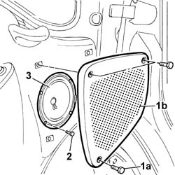

5570T90 FRONT SPEAKER - R R
- Path
- Procedures > 55 ELECTRICAL EQUIPMENT > 5570 ACCESSORIES > 5570T CAR RADIO AND CAR TELEPHONE > 5570T90 FRONT SPEAKER - R R
- Kind
- repair procedure (removal / refitting; the operation number is the code)
- Applies to
- all engines; all production periods
- Interactive page
- https://sloeber94.github.io/elrnDB-fDct/en/#/244001398
Applies to: all engines; all production periods
 Removing
Removing
 Refitting
Refitting- Disconnect the negative battery terminal.
1. Undo the bolts (1a) and remove the grille (1b).
2. Undo the fixing bolts.
- Disconnect the electrical connection.
 | Description | Connector |
|---|---|---|
. | Speaker in left front door | P035 |
| Description | Connector |
|---|---|---|
. | Speaker in right front door | P036 |
3. Remove the speaker.

Applies to: all engines; all production periods
Refitting
Removing- Connect the electrical connection.
| Description | Connector |
|---|---|---|
. | Speaker in left front door | P035 |
| Description | Connector |
|---|---|---|
. | Speaker in right front door | P036 |
- Position the speaker and tighten the fixing bolts.
- Position the grille and tighten the fixing bolts.
- Connect the negative battery terminal.
Topics that link to this page (15)
- 5505A70 FRONT DOOR CABLE LOOM - R.R. OR REPLACE
- 7005A05 FRONT SIDE DOOR WATER GUARD PROTECTION R R OR ARRANGE
- 7005A28 FRONT SIDE DOOR LIMITER- REPAIR OR REPLACE
- 7005C11 FRONT SIDE DOOR OUTSIDE HANDLE R R
- 7005C35 BARREL FOR FRONT SIDE DOOR LOCK - R+R
- 7005C51 FRONT SIDE DOOR INNER CATCH DEVICE - R+R FOR REPAIR OR REPLACEMENT
- 7005C60 FRONT DOOR OPENING IDLER DEVICE BRACKET/MOUNTING (ONE) LEFT OR RIGHT - R.R.
- 7005C67 FRONT SIDE DOOR SAFETY CATCH LINK R R
- 7005D15 FRONT SIDE DOOR DESCENDING WINDOW GLASS R R
- 7005D23 FRONT SIDE DOOR DESCENDING WINDOW GLASS GUIDE ONE R R
- 7005E08 FRONT SIDE DOOR INTERIOR PANEL R R
- 7005E38 FRONT SIDE DOOR INTERIOR HANDLE-R R
- 7005M21 FRONT SIDE DOOR ELECTRICALLY OPERATED WINDOW - R R
- 7005N21 FRONT SIDE DOOR LOCK MOTOR-LOCK ASSEMBLEY-R R
- 7005R50 ELECTRICALLY OPERATED EXTERIOR REAR VIEW MIRROR WITH TWO REFLECTORS (ONE) LEFT OR RIGHT - R.R.